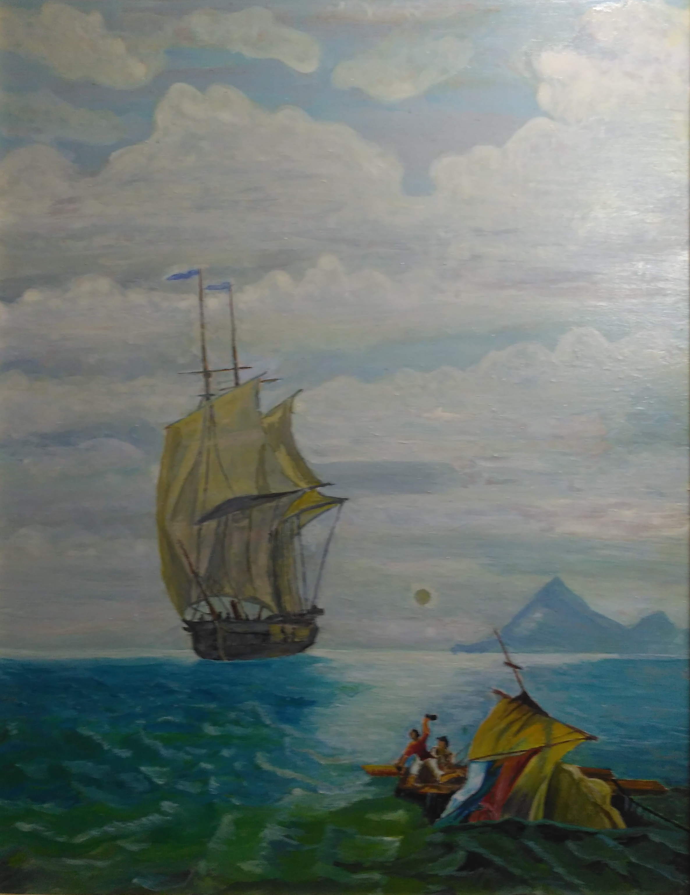

Когда из объятий нас выпустят волны, И берег приветливый примет нас в гости, Мы трубки закурим и кубки наполним, Ушедших почтив в обязательном тосте. Мы встретимся снова в таверне портовой, Вернувшись назад после трудного рейса. В застольи друзей под веселое слово Бродяга морской отдохни и согрейся. Мы были в таких неизведанных странах, Где стынет волна, где земля пламенеет. Все дальше маршруты друзей-капитанов. А встречи все реже... А круг все теснее...